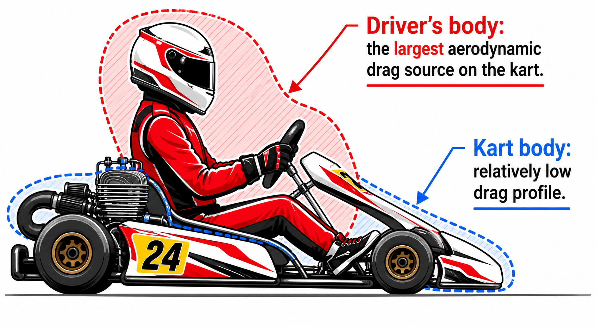
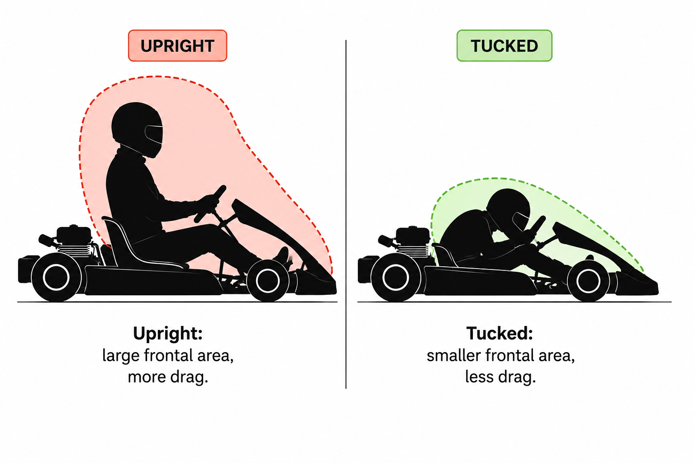
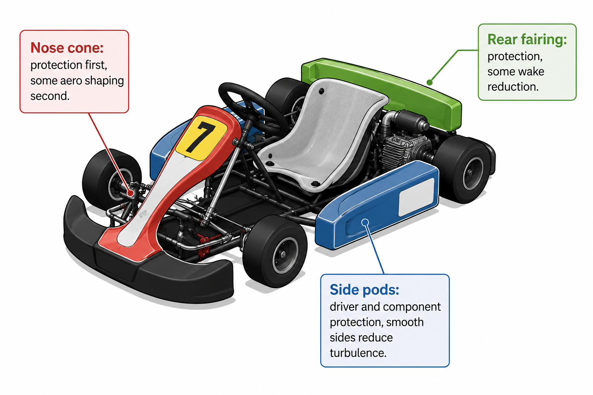

01 — WHY THIS LESSON EXISTS
Kart aero is a different size problem
A kart is not a tiny Formula 1 car. It lives in a lower speed band, so aerodynamic force is much smaller — but the same physics still applies.
The main takeaway is scale. At kart speeds, aero is usually less dominant than on a race car, so the driver body, seating position and basic packaging matter a lot.
02 — SPEED STILL RULES
Downforce rises with the square of speed
That square-speed rule from earlier lessons still applies here. If speed goes up, aerodynamic load rises much faster than people expect.
03 — THE BIGGEST DRAG SOURCE
The driver usually matters more than the kart body
At kart speed, the driver’s shape can create more drag than the kart itself. That is why a helmet, shoulders, arms and upright posture become such important aerodynamic features.

If your body is tall and wide to the airflow, it pushes more air out of the way. If you shrink your exposed shape, drag drops.
04 — RIDER POSITION
Upright vs tucked
Leaned-back and tucked positions reduce frontal area. Upright positions are easier to drive, but they leave more body in the airflow.

More frontal area, more drag, but sometimes easier comfort and control.
Less frontal area, less drag, and a cleaner shape through the air.
05 — WHAT THE KART DOES CARE ABOUT
Nose cone, side pods and rear fairing
The kart body still has jobs: protect the driver, guide air, and keep the package compact. But the aero ambition is much simpler than a race car.

Protection first, some shaping second.
Protect driver and components while staying compact.
Can smooth the wake a little, but only within the rules.
06 — WHAT TO REMEMBER
The beginner lesson from karting
Kart aero teaches you not to over-apply F1 thinking. At lower speeds, the driver body and seating position can matter more than fancy aero parts.
GO DEEPER
Books worth opening
Competition Car Aerodynamics — Simon McBeathGood broader context for cars, drag and packaging.
Race Car Aerodynamics — Joseph KatzUseful for understanding why speed and load scale so differently.
Any basic aerodynamics primerEspecially helpful for seeing that different speed ranges change the whole game.
Finished this lesson? Mark it as complete to track your progress.